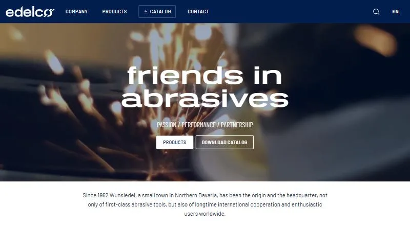
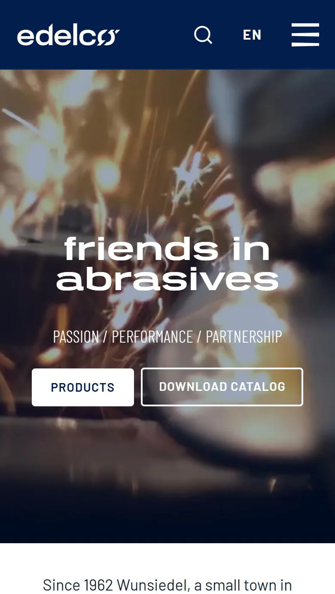
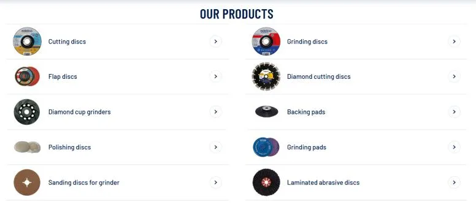

Trabajo profesional en Aghasa Turis
Edelco, una web corporativa en WordPress
Web corporativa en WordPress para Edelco, un fabricante de herramientas abrasivas con sede en Wunsiedel, en el norte de Baviera. Partí de un tema ya existente y lo adapté a la identidad de la marca.


El encargo
La web tenía que presentar diez familias de producto, desde discos de corte y de desbaste hasta discos diamantados y de pulido, y facilitar la descarga del catálogo en PDF, con un tono corporativo y fiable.
Estructura
Una portada de una sola página recorre la presentación de la empresa, la carta de bienvenida de sus directores, las familias de producto, las certificaciones de calidad y el contacto. El catálogo en PDF está siempre a mano: como botón en la portada y destacado en el menú.

Personalizar un tema
No empecé de cero: partí de un tema de WordPress que ya existía. El trabajo fue adaptarlo para que pareciera hecho a medida para la marca:
- Tipografías de la marca: Barlow para el texto, Barlow Condensed para los títulos y una tipografía expresiva para el lema.
- El azul marino corporativo en la cabecera y los títulos, y fotos de chispas que muestran el producto en uso.
- Componentes ajustados al contenido, como el listado de familias o la franja de certificaciones.
- Revisión del diseño en móvil, con el menú recogido en un botón.
Saber personalizar un tema existente es tan útil como crear uno nuevo: es más rápido y barato para el cliente, y obliga a entender bien el código de otra persona antes de cambiarlo.